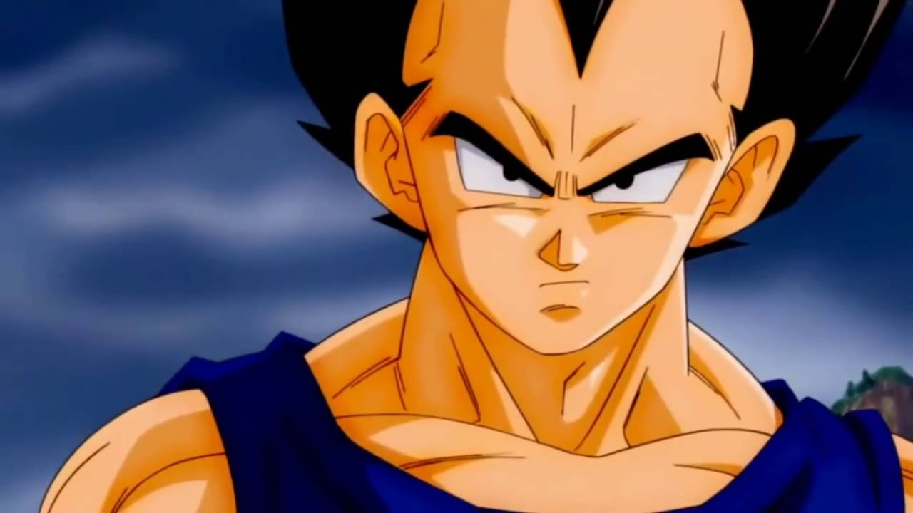
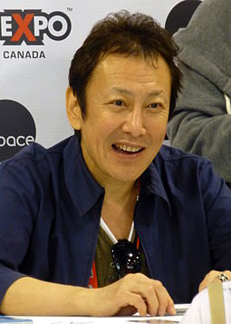
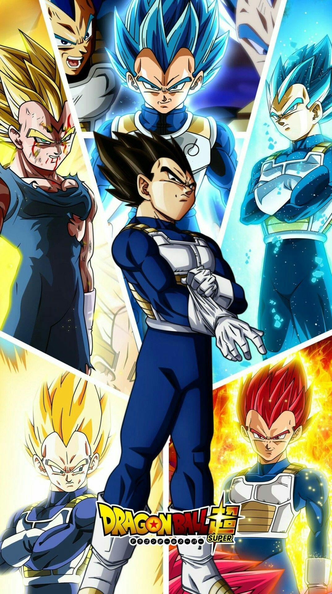

First appearance:Dragon Ball chapter #204 Sayonara, Son Goku, January 7, 1989 (Weekly Shōnen Jump 1989)
Created by :Akira Toriyama
Voiced by
Japanese:
Ryō Horikawa
English:
Christopher R. Sabat (Funimation/Crunchyroll)
Brian Drummond (Ocean)
IN Universe INFO
Species: Saiyan
Title: Prince of all Saiyans
Family:
King Vegeta (father)
Vegeta II (paternal grandfather)
Vegeta I (great-grandfather)
Queen eschalot (mother)
Tarble (brother)
Tights (sister-in-law)
Gure (sister-in-law)
Spouse: Bulma (wife)
Children: Trunks (son),
Bulla (daughter)
Abilities :
Superhuman strength, speed, agility, reflexes, durability, endurance, stamina and healing, flight, energy sensing, energy projection, energy absorption, telepathy, telekinesis, teleportation
Vegeta (Japanese: ベジータ, Hepburn: Bejīta) (/vəˈdʒiːtə/ və-JEE-tə), fully referred to as Prince Vegeta IV (ベジータ 王子 四世, Bejīta-ōji Yon-sei),[1] is a fictional character in the Japanese franchise Dragon Ball created by Akira Toriyama. Vegeta made his appearance in chapter #204 "Sayonara, Son Goku", published in Weekly Shōnen Jump magazine on January 7, 1989,[2] seeking the wish-granting Dragon Balls to achieve immortality.
As the first major antagonist of Dragon Ball Z
Vegeta is the prince of an elite extraterrestrial warrior race known as the Saiyans. As a person, he is naturally blunt, regal, hard-working and is full of his saiyan pride; he often refers to his heritage and royal status throughout the series, but can also have negative traits such as being extremely haughty along with a destructive temper.[3] He believed that he should be regarded as the strongest fighter in the universe, and becomes obsessed with surpassing Son Goku after losing his battle with the Z fighters. However, after Frieza's death, Vegeta unites with the heroes to thwart greater threats to the universe, most notably Cell, Majin Buu, Beerus, Zamasu, Jiren, Broly, Moro and Granolah. Throughout the series, Vegeta's role changes from villain to later as one of the heroes, while remaining a key rival to Goku.
Vegeta has been hailed as one of the most iconic characters not only in the Dragon Ball franchise, but also in manga and anime history as a whole. He is often cited as one of the most popular examples of rival characters in the industry, due to his character arc and narrative throughout Dragon Ball Z and Dragon Ball Super.

When creating Vegeta, Toriyama originally intended for him to be a short-lived antagonist and second-tier character, with little influence to Dragon Ball's story. Toriyama intended for Goku to simply kill him at the climax of their first battle, and portrayed him as simply and one-dimensional as he should have been considering this
Despite this, the character became more popular than he had expected, and Toriyama became afraid of the backlash of killing him unceremoniously. Thus Toriyama decided to keep Vegeta in the story for longer. Frieza, who was designed as the antagonist of a later story arc whom Vegeta would come into conflict with much later in the story, was used with the secondary aim to create a reasonable "Death" for Vegeta. But he would be revived due to his popularity still.
He explained his surprise at the character's popularity in an interview during the release of Dragon Ball Z: Battle of Gods, "I had thought about bringing an end to [his story] as just a villain, but as I was writing, I felt that his villainous [...] warped straightforwardness was unexpectedly interesting. I couldn't imagine that a guy with this kind of hairstyle would become popular, and yet he'd get more votes than Goku in favorite-character polls."[4][5]
VOICE ACTOR

In the original Japanese version of the anime and all other media, Vegeta is voiced by Ryō Horikawa.[11]
In the Ocean Productions English dub, Vegeta was voiced by Brian Drummond. Drummond returned in the Funimation dub of Dragon Ball Super to voice Vegeta's Duplicate.
In Funimation (now Crunchyroll)'s in house dub, Christopher Sabat has voiced Vegeta in all Dragon Ball media, including video games. While Sabat continued to dub Vegeta's adult incarnation in Dragon Ball Z Kai,[12] Laura Bailey voiced Vegeta's child incarnation in Dragon Ball Z Kai and Justin Briner voiced Vegeta's child incarnation in Dragon Ball Super.
In Brazil, where Dragon Ball is a huge success, Vegeta has been voiced by Alfredo Rollo since his debut. In Latin American Spanish, he's consistently been voiced by René García.

Up until his tail was cut off, Vegeta could turn into a gigantic monkey-like creature called an Ōzaru (大猿, lit. "Great Ape") by looking at a full moon, an ability common of all Saiyans with tails.[81][82] Vegeta has the ability to create and enhance attacks with the use of ki. He also has the ability to use Bukū-jutsu (舞空術, lit: "Air Dancing Technique"), which enables him to fly.[83] Constant training and his Saiyan heritage have given him vast superhuman strength, durability, speed, and reflexes.[83] Vegeta can increase his physical capabilities and flight speed many fold if he directs ki into them
Vegeta is known to give names for his various energy attacks. In his early appearance, Vegeta is seen to use attacks similar to several of the protagonists of the series, such as a Ki Disk Razor (気円斬, Kienzan), a laser-like disk capable of cutting through solid objects, and a ki wave similar to Goku's Kamehameha. One of his better known attacks is the Galick Gun (ギャリック砲, Gyarikku Hō), although he uses it only once in the Z series proper; during his battle against Goku in an attempt to destroy the Earth.[82][83] He later develops the Big Bang Attack (ビッグ・バン・アタック, Biggu Ban Atakku)[84][85] and the Final Flash (ファイナルフラッシュ, Fainaru Furasshu)[86][87] techniques, which are much more powerful than his older energy attacks. One of Vegeta's most commonly used tactics in the series is when he bombards an opponent with an array of small ki blasts. He is not known to have an official name for this attack, but it is occasionally called Rapid-Fire Energy Balls (連続エネルギー弾, Renzoku Enerugī Dan). Later on in the franchise, he develops an even more powerful version of his Final Flash attack, called Gamma Burst Flash (ガンマバーストフラッシュ, Ganma Bāsuto Furasshu). In Dragon Ball GT, Vegeta displays a powerful new attack, entitling it the Final Shine Attack (ファイナルシャインアタック, Fainaru Shain Atakku), where he uses his left hand to fire off a massive beam of green ki that widens with distance.[88] Because of his immense strength and power, Vegeta, along with many other characters from the Dragon Ball franchise, can destroy entire planets if not star systems, galaxies and even entire Universes with single attacks if he intends to.[82][89][90]